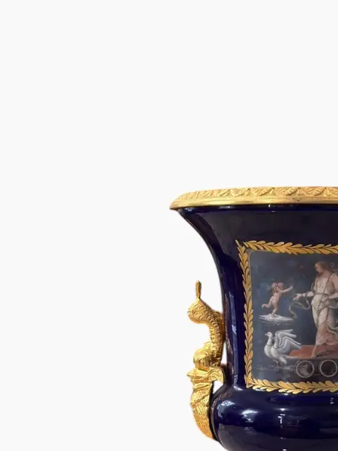
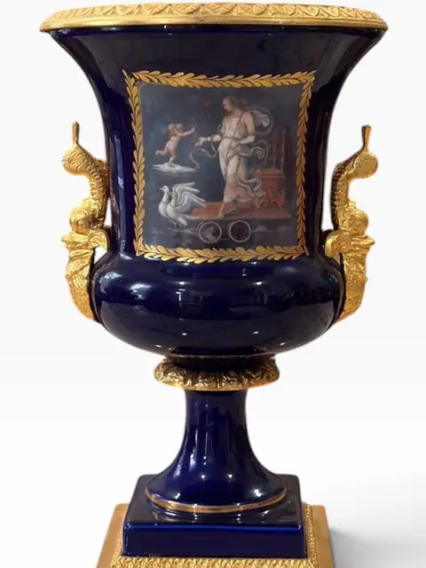
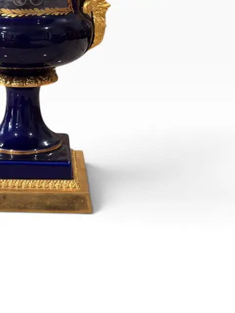
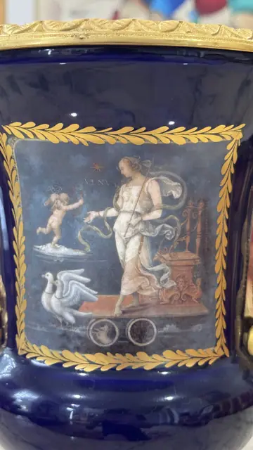
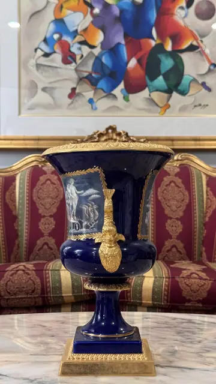
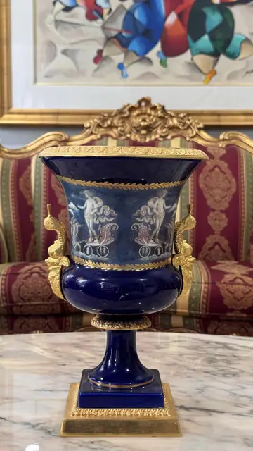
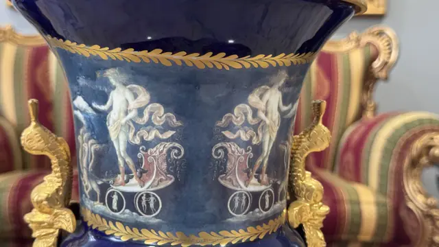
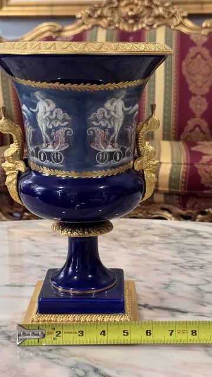
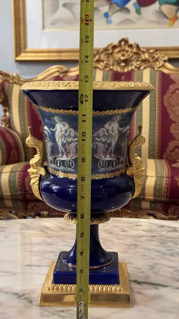
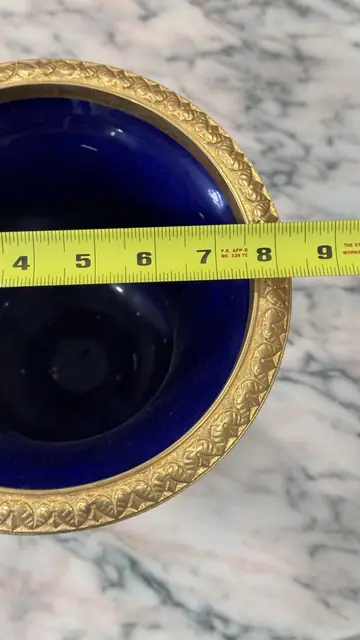

Handmade Objects
French Sèvres-Style Cobalt Blue Porcelain Pedestal Urn with Classical Painted Panel
· 20th century
Price Upon Request











About the Item
A French pedestal urn in the Sèvres taste, the cobalt bleu-de-roi ground enriched with gilt mounts and serpent-form handles. A gilt laurel-framed panel is hand-painted with a classical allegorical scene of a maiden with doves and a putto. Raised on a square gilt plinth. Dimensions: Height: 13 in (33 cm); Base width: 6.25 in (16 cm) Unmarked (no base/mark photo in set). Bleu-de-roi (cobalt) ground, gilt bronze-style mounts: serpent handles, pierced rim gallery, square plinth. Classical panel: draped female figure, doves, putto, chariot wheels — allegorical. Height read from tape photo 09 (rim at 13 in); plinth width from photo 08 (~6.25 in).
Details
- Creation Year:
- 20th century
- Medium:
- Porcelain with gilt-metal mounts
- Period:
- 20Th
- Condition:
- Offered in the condition shown in the photographs.
- Reference Number:
- VO-385